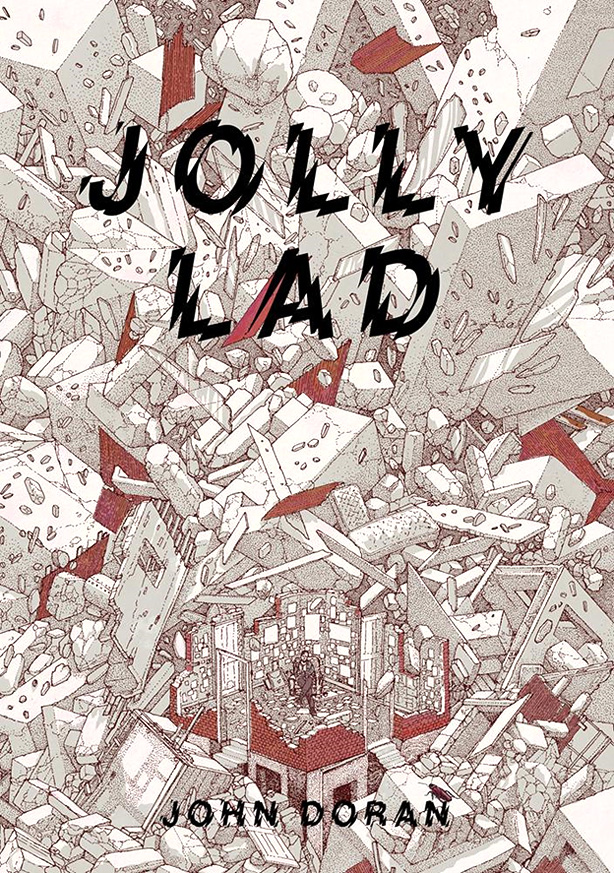

If Wet #22 takes place on Sunday 10th May, 2-4pm in Callow End Village Hall!
JOIN US.
We are delighted to be part of John Doran’s (The Quietus) tour, presenting his new book Jolly Lad; to an ambient musical accompaniment from Arabrot. We also have the wonderful Sarah Angliss paying us a visit again and we are thrilled to welcome the poet Josephine Dickinson to Callow End.
Due to heightened demand, and our limited village hall capacity, we are pre-selling tickets for this event. Here is the ticket booking page.
______________________________________________________________________
Our first If Wet this year in our home of Callow End Village Hall represents a bit of a departure from our usual events. Last year, John Doran of The Quietus got in touch to ask whether we would host an event as part of his tour to celebrate the launch of his book. We weren’t entirely sure how this fitted with If Wet but John and The Quietus have shown us a lot of support over the last couple of years, and we always relish an opportunity to play with the If Wet format; such as If Wet as radio show.

When we heard more about the tour and John’s book, it became clear what sort of artists we might invite to this event, to accompany the reading and performance John and Arabrot would deliver. We decided on a sonic storytelling thread, and Josephine Dickinson and Sarah Angliss seemed immediately appropriate.
As your hosts we will kick the event off, as usual. Then it will be over to Josephine to provide us with an insight into her work and background.
Josephine has something of a unique story. She has known normal hearing, sudden profound deafness, sudden total deafness, extreme aural hallucinations and, most recently, the experience of sound with a cochlear implant. A poet, composer and artist, she studied with Michael Finnissy and Richard Barrett in London, then moved to remote Cumbria, where she lives on a tiny hill farm. Josephine will share her story and explore its implications and possibilities for her practice. She will be open to the insights and ideas of the audience. “It is an ongoing and exciting journey that has only just begun.”
Next up, we have Sarah Angliss in our hall for the second time, to provide some of her captivating folk tales and music provided by her and her robotic friends.
Sarah is an award winning composer, roboticist and historian of sound whose music reflects her fascination with European folklore and long-forgotten machines. Sarah is known for her singularly embodied performance which mixes theremin, saw and ancient instruments with live electronics, with the ensemble of musical automata she’s designed and built to work with her on stage.
Her If Wet presentation will feature new songs from Ealing Feeder, her forthcoming solo album, inspired by London folklore.
Lastly, we will have John Doran, performing a reading from his book Jolly Lad; accompanied by Arabrot.
Jolly Lad is a memoir about the recovery from alcoholism, habitual drug use and mental illness. It is also about the healing power of music, how memory defines us, the redemption offered by fatherhood and what it means to be working class.
____________
This will definitely be distinct from our usual If Wet events. There will be more emphasis on performances and less on discussion but we certainly hope to maintain the If Wet flavour in various ways. Firstly, either side of the performances we hope to encourage questions from our audience; the usual generous and open exchanges. Secondly, our village hall setting – coupled with village ale, home-made grub and cake – will provide the usual atmosphere.
As this is a one-off special event, we have decided to pre-sell tickets at the princely sum of £6 each. These may sell fast, who knows, but please consider buying your tickets now so you are not disappointed. Here is the tickets page. JOIN US.
Please note: this event may overrun if discussions take flight.